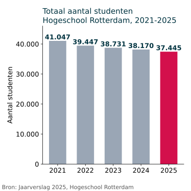
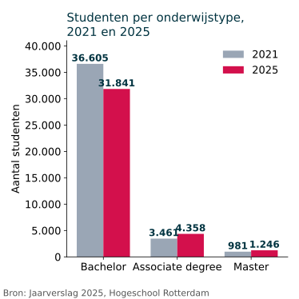

Cijfers en grafieken
Vraag: hoe groot is Hogeschool Rotterdam en wat betekent dat voor de kantines?
Wat zeggen de cijfers?
- In 2025 waren er 37.445 studenten (jaarverslag).
- Het factsheet zegt: bijna 37.500 studenten, ongeveer 100 opleidingen, zes sectoren, negen locaties en meer dan 4.000 medewerkers.
- Sinds 2022 daalt het aantal elk jaar met 561 tot 1.600 studenten.
Grafiek 1: Het aantal studenten daalt

Uitleg
Elke staaf is een jaar. De staven worden bijna elk jaar lager. Tussen 2021 en 2025 verdwijnen 3.602 studenten. De grootste daling zit tussen 2021 en 2022 (1.600 studenten). Daarna zijn de dalingen kleiner (tussen 561 en 716 per jaar). Het totaal in 2025 komt ook voor in het corporate factsheet (bijna 37.500), dus twee bronnen bevestigen elkaar.
Beperkingen
Het gaat om studenten die op 1 oktober ingeschreven staan, niet om het aantal mensen dat echt elke dag in het gebouw is. Deeltijdstudenten zijn niet altijd op school. Niet-bekostigde masteropleidingen zijn niet meegeteld (zie voetnoot in het jaarverslag). De grafiek laat niet zien waarom het aantal daalt.
Bekijk de cijfers in een tabel
| Jaar | Studenten |
|---|---|
| 2021 | 41.047 |
| 2022 | 39.447 |
| 2023 | 38.731 |
| 2024 | 38.170 |
| 2025 | 37.445 |
Grafiek 2: Bachelor krimpt, Ad en master groeien

Uitleg
Elk onderwijstype heeft twee staven: grijs is 2021 en donker is 2025. Bij bachelor wordt de staaf lager (-4.764). Bij associate degree (Ad) en master wordt de staaf hoger. Toch is de bachelor met 31.841 studenten nog ver de grootste groep (ongeveer 85 procent van alle studenten in 2025).
Beperkingen
Alleen 2021 en 2025 zijn vergeleken, dus de jaren ertussen zie je niet. De groei bij Ad en master is in aantallen klein vergeleken met de daling bij bachelor. Het factsheet noemt dezelfde cijfers voor 2025 (31.841, 4.358 en 1.246).
Bekijk de cijfers in een tabel
| Onderwijstype | 2021 | 2025 | Verschil |
|---|---|---|---|
| Bachelor | 36.605 | 31.841 | -4.764 |
| Associate degree | 3.461 | 4.358 | +897 |
| Master | 981 | 1.246 | +265 |